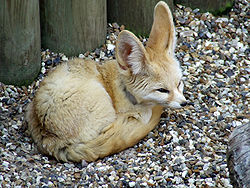
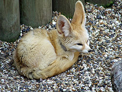

페넥여우
페넥여우는 가장 작은 개과동물이며 북아프리카의 모래사막에 서식한다. 페넥여우는 사막기후에 최적화되어 작은 몸집, 털로 덮힌 발바닥, 체온조절 효과가 있는 큰 귀 등을 갖추었다.페넥여우는 야행성이며 잡식성으로서, 무척추동물 뿐만 아니라 소형 척추동물과 과일, 식물구근 등도 먹는다. 일부 학자는 이 종을 페넥여우속(Fennecus)의 유일한 종으로 분류하기도 한다.
다른 페넥여우 계통인 검은꼬리모래여우(Vulpes pallida), 아프간여우(Vulpes cana), 케이프여우(Vulpes chama)와 잘 구분되지 않는다.
 
